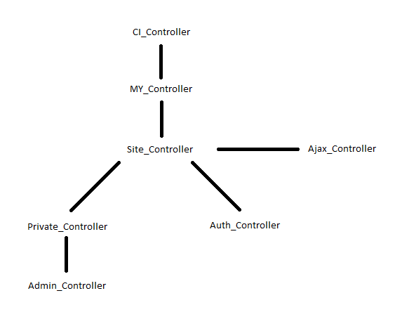
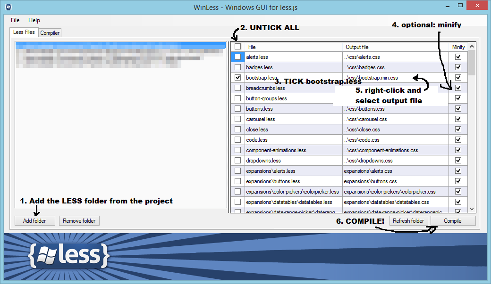

Theming and Layouts
The default controller
Home
This controller is set in application/config/routes.php
Check out line 52 where$route['default_controller'] = 'home'; determines this.
Default controllers pick up when you call a module without calling a controller like example.com/adminpanel.
Custom 404 page
We can also find this setting in routes.php LINE 53: $route['404_override'] = 'utils/page_not_found';
Keeping it DRY
Application/core overview:
- MY_Controller: the first parent, everything is derived from this core controller. Contains theming methods.
- Site_Controller: extends MY_Controller and adds roles and permission methods that can be used anywhere in the application.
- Private_Controller: extends Site_Controller and adds login verification so that only logged in users can view these pages;
- Auth_Controller: extends Site_Controller and is only used for public controllers where we need to redirect members who are logged in to avoid them having access to authentication forms.
- Admin_Controller: extends the Private_Controller and loads the admin-specific language file;
- Ajax_Controller: used when the whole controller is AJAX-only - in the constructor we check for AJAX with
$this->input->is_ajax_request().

We extend our controllers from any of these core controllers depending on what we need. This is the first question to ask ourselves when writing new code: do we want this page to be public or private? Additionally, do we need new roles and permissions, is this an adminpanel page? We can even add more core controllers, you can add a new core controller for your module for example and extend all your module controllers from this new custom core controller. You can then add shared code and methods to your core controller to avoid duplicate code. Will be handy for larger projects.
Bootstrap, LESS and Compiling
How is Bootstrap hooked into this? We have a less folder that is not part of the ci_membership package.
Bootstrap's default code can be found here less/adminpanel/vendor/bootstrap3.3.x and the overrides for this
theme are in less/adminpanel/bootstrap. We then use the bootstrap.less file found here to keep track
of our imports. Notice at the bottom of this file we import our own code. This is the file you need to compile.
I use Winless, here is a visual example:

Winless auto-compiles, meaning as soon as you tab away from your project view and your project is selected inside winless, it will compile. It might not always do this, but it does work most of the time.
When you add your own less files you can (but don't have to) refresh the Winless folder and untick the newly added files.
We could also use Grunt or Gulp and make a listener for our changes via command line which I would highly advise you to do as it saves so much time. We won't go into detail here - for all those node users, check out https://github.com/gruntjs/grunt-contrib-less which I'm sure you already know.
An excellent example of how to do this specifically for Bootstrap is to check out this simple grunt tutorial. Once Bootstrap 4 is out we're going to have to switch to this type of setup anyway because it's much more practical to use in stead of having to install something like Winless.
Some IDEs like PHPStorm allow you to incorporate a transpiler into your software:
https://www.jetbrains.com/help/phpstorm/2016.3/transpiling-sass-less-and-scss-to-css.html#d405088e199
For all you guys new to command line: the basics of getting started with composer, grunt and node are easy - it just takes some dedicated time without any distraction to get that lightbulb moment. Once you get up and running you won't look back.
Managing Layouts
Themes: application/views/themes/
These are the HTML5 pages that act as containers for our dynamic parts of the application. Partials will be loaded into these files.
This is the core of the theme, this file is loaded first in our template method quick_page_setup(). See below.
What layout to choose?
- adminpanel is for the backend
- bootstrap3 is for public pages
Choose wisely: the headers and footers of each theme differ and serve a specific purpose. Check out the existing code and use them as examples.
So for example the auth module uses bootstrap3 as $theme because it is part of the front-end. The profile uses the adminpanel because it is part of the backend. For views this isn't as important - you can easily override the default view theme with another one to grab view files from another theme. This allows us to quickly override certain parts of the website.
Generic files: some of the views are still stored in application/views/themes/ because these are used at more then one location and do not belong to a single module.
Modules: the module-specific views are found in application/modules/[module_name]/views.
quick_page_setup()
Our Template library takes care of loading views dynamically allowing for way more flexibility
then the standard CodeIgniter behaviour. You can load views from other themes, you can create a custom folder in views
and load those views in any controller for your module. Use the $overriding_theme explained below
to grab from another theme.
Below is the method responsible for setting up pages quickly in a controller. This method lives in
application/core/MY_Controller.php making it accessible to all controllers.
public function quick_page_setup($theme, $layout, $page_title, $path, $header, $footer, $overriding_theme = "", $data = array()) {
if (empty($overriding_theme)) {
$overriding_theme = $theme;
}
$this->template->set_theme($theme);
$this->template->set_layout($layout);
$this->template->title($page_title);
$this->_process_partial('header', $theme, 'partials/'. $header);
$this->_process_partial('footer', $theme, 'partials/'. $footer);
if (!empty($data)) {
$this->_process_template_build($overriding_theme, $path, $data);
}else{
$this->_process_template_build($overriding_theme, $path);
}
}- $theme: set the active theme, usually this will be Settings_model::$db_config['active_theme'] for non-adminpanel pages and Settings_model::$db_config['adminpanel_theme'] for adminpanel pages. These can be found in Site settings in the admin panel. The default theme for Settings_model::$db_config['active_theme'] = bootstrap3; The default theme for Settings_model::$db_config['adminpanel_theme'] = adminpanel. These must reflect a folder inside application/views/themes; you can add your own theme by creating a new folder here.
- $layout: choose your layout, for example 'main' or 'adminpanel' - this must reside in views/themes/[themename]/layouts/
- $page_title: will appear in browser window as page name
- $path: path to the actual view file inside this module folder
- $header, $footer: names of the partials used for these purposes
- $viewTheme: in case you need a custom theme; it's an alternate folder location for views if you need some from other themes - omit or leave on '' if not needed
- $data: array of data passed to view (optional, omit if not needed)
I am using modules/membership/controllers/Home.php as an example. In our controller we call this method with:
public function index() {
$this->quick_page_setup(Settings_model::$db_config['adminpanel_theme'],
'adminpanel', // theme
$this->lang->line('home_title'), // page title
'home', // view name
'header', // partial
'footer', // partial
Settings_model::$db_config['active_theme'] // overriding theme for partials only (optional)
);
}Passing data will be done by passing an array to the method at the end:
public function index() {
$this->quick_page_setup(Settings_model::$db_config['adminpanel_theme'],
'adminpanel', // theme
$this->lang->line('home_title'), // page title
'home', // view name
'header', // partial
'footer', // partial
Settings_model::$db_config['active_theme'], // overriding theme
$content_data // array of data to pass to the view
);
}Loading Custom Data With set_css() and set_js()
In our index() method belinging to our controller we can also quickload CSS and JS files with our template engine:
- use set_css() for CSS
- set_js() for JavaScript files
These are loaded in the header and footer for each theme (adminpanel and bootstrap3). Here is an example from our password generator files:
$this->template->set_js('widget', base_url() .'assets/vendor/jquery/jquery.ui.widget.js');
$this->template->set_js('upload', base_url() .'assets/vendor/fileupload/jquery.fileupload.js');
$this->template->set_js('big-min', base_url() .'assets/vendor/diceware/components/big.min.js');
$this->template->set_js('special-min', base_url() .'assets/vendor/diceware/lists/special-min.js');
$this->template->set_js('diceware-min', base_url() .'assets/vendor/diceware/lists/diceware-min.js');
$this->template->set_js('eff', base_url() .'assets/vendor/diceware/lists/eff.js');
$this->template->set_js('password-gen', base_url() .'assets/vendor/diceware/password_generator.js');As you can see we need to feed these methods a unique name for each line because we're adding it to an array behind the scenes.
Setting metadata
You can easily generate metadata in de index() of a controller with this Template method:
public function set_metadata($name, $content, $type = 'meta') {}
Where the third argument can also be "link".
We use it like this:
$this->template->set_metadata('description', $this->lang->line('add_member')); in an index() so where
you also load a template.
In the theme file (application/views/themes/[themname]/layouts) meta data is called with:
<?php print $template['metadata']; ?>
Creating A Custom Theme
It takes some time to get used to but once you get the hang of it you will see that this system offers great flexibility. You can for example use custom layouts for each page with the quick_page_setup() method.
A. Front-end
First we choose a new active theme name for our custom design: let's use the name newtheme for this example.
Now we copy the vital view folders so that we can use the copied views to modify the markup:
- for the home page I copy modules/home/views/themes/bootstrap3 to modules/home/views/themes/newtheme
- for auth I copy modules/auth/views/themes/bootstrap3 to modules/auth/views/themes/newtheme
- for utils I copy modules/utils/views/themes/bootstrap3 to modules/utils/views/themes/newtheme
- For theme files: copy views/themes/bootstrap3 to views/themes/newtheme
We need a new css file in assets/css/newtheme/bootstrap.min.css (use the one from your design here or compile with LESS).
Optional: create a folder assets/img/newtheme and store your theme images here.
This allows us to change our active theme in /adminpanel/dashboard:
look for "Currently active theme" and change it to newtheme - save your settings.
Now you are working on your own theme, no more need to mess with default files.
A. Back-end
Same deal: choose a new name for your adminpanel theme and copy the view folders to this new name:
- We copy over the theme views folder modules/adminpanel/views/themes/adminpanel
- Make a copy of modules/membership/views/themes/adminpanel
- For theme files: copy views/themes/adminpanel to your new folder namein the same destination.
Create a new theme folder with a css file in assets/css just like the ones already there (copy).
Now we change the adminpanel theme in site settings and work on the new theme can start.
Off course the adminpanel design is more complex and depends on more tools like a menu, a file upload script and many more.
In the less folder we have an adminpanel folder - you can copy it and use it in your compilation.
Quick Tips:
- If you want to change a controller that might get overwritten you can opt to copy it and set a route to your copied controller to avoid changing default files.
For example you can create a controller modules/home/controllers/Start.php and add a route from home to start, effectively overriding the home page.
- More interesting when having to edit CIMembership files is to copy the whole module and work from there. You will effectively make your own
fork of the code and will have to either drop future changes to CIM or add them manually later. If your clients require you
to heavily modify the code than this is your best bet. When you only need light features consider requesting them to be added to the default code.
- assets: cs, js and such can be stored in several ways: we opted for a vendor folder for JS while CSS will be handled by a LESS compiler.